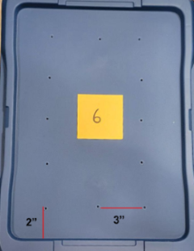
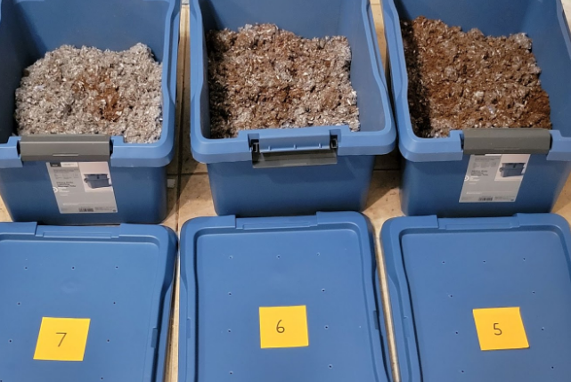
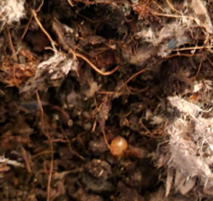
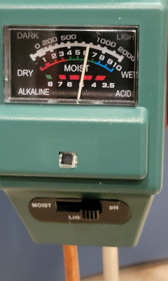

- 3 7-gallon totes were used as bins
- One bin used for each pH level - pH 5, 6, and 7
- Dots marked with chalk to lay out the air holes
- Holes then drilled - 1/8" diameter drill bit
- As seen in picture, holes spaced 3" apart, 2" from the edge
- 12 holes in each lid

- Peat moss and worm bedding used in each bin
- Mimicks soil of earthworms' environment
- Hoffman Canadian Sphagnum Peat Moss and Frabill Super-GRO Worm Bedding
- SONKIR Soil tester used to verify acidity - 5, 6, 7, respectively
- Bin 5 - 6 liters of peat moss, 3 liters of bedding
- Bin 6 - 3 liters of peat moss, 4 liters of bedding
- Bin 7 - 1.5 liters of peat moss, 6 liters of bedding

- 100 European nightcrawler (Eisenia hortensis) eggs purchased
- 20 eggs placed at the top of each of the 3 bins
- Picture shows one of the eggs - bright orange
- Extra 40 eggs were disposed of

- Bins kept in a dark closet - not exposed to light
- 500 mL of distilled water poured into each bin every day
- Bin moisture and pH level checked
- 250 mL more water added if the bin was too moist
- Number of hatched earthworms in each bin counted
